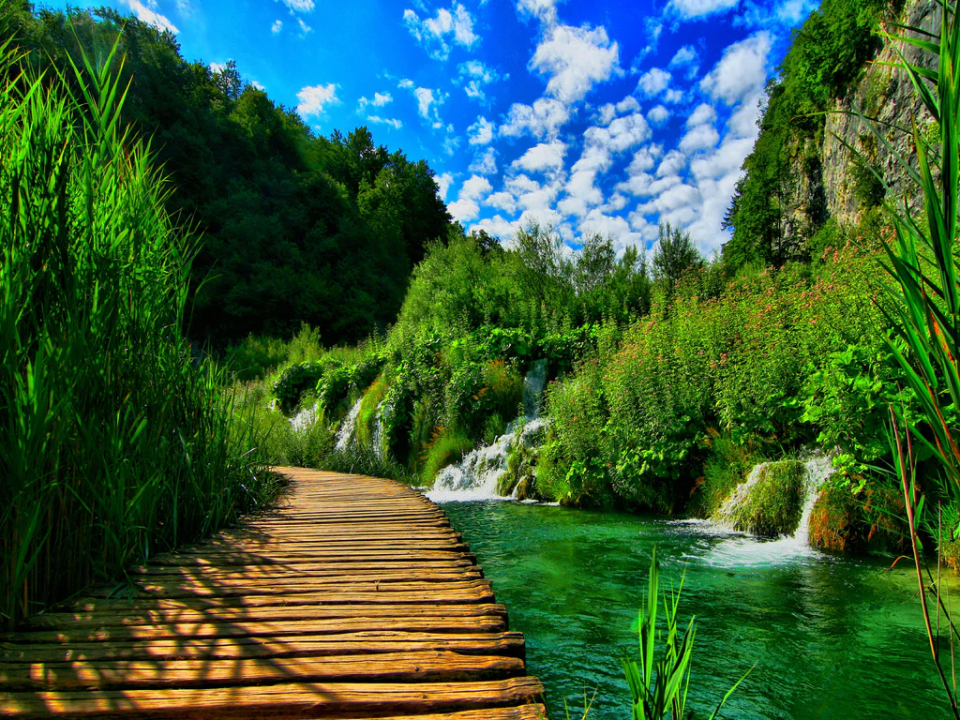
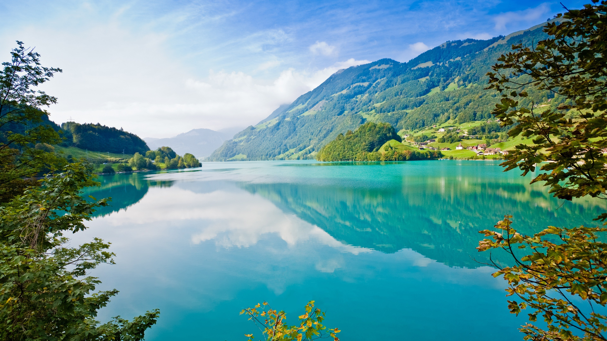
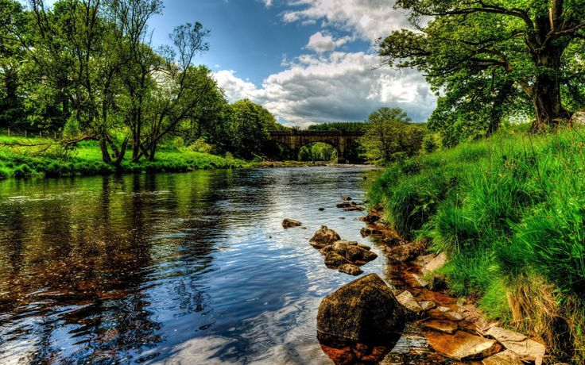
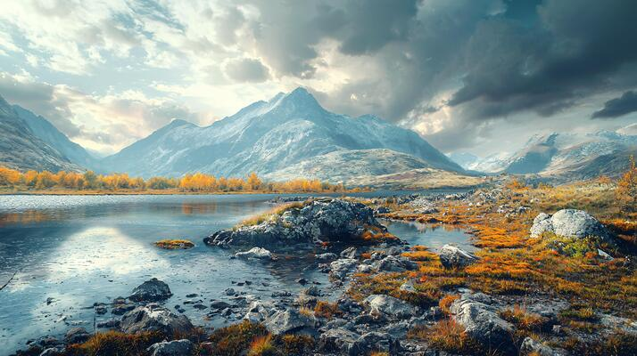
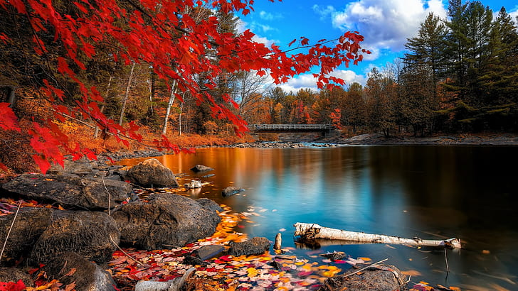

Nature has always been a place of serenity and inspiration for me. There's something about being amongst the unadorned loveliness of the world—whether it's the silence of a still forest or the vastness of an open sea—that just feels like coming home. It's not so much about how nature looks, it's about how it feels. It's a reminder that there is so much more to life than the humdrum of daily existence.

The variety of life existing in nature is breathtaking. It ranges from the tiniest insect to the tallest tree, and each and every one of them plays their own part in the precarious balance of our world's ecosystems. It is a humbling thought to consider how everything is connected and how we, human beings, are not exempt from that web.

I believe nature is essential to our well-being. There's science behind it—being in nature was discovered to lower stress, improve mood, and boost mental sharpness. Nature offers us space to breathe, to renew, and to ponder. It offers a kind of quiet that's hard to find anywhere else, and in that quiet, we can really listen—whether it's the wind rustling through the leaves or our own thoughts.

But it's not just what nature does for us. It's also what we could possibly do for it. Preserving nature and saving our world is crucial, not just for us,but for future generations as well. The planet is resilient, but it requires our help. Every little bit counts—whether that's conserving on waste, conserving water, or simply being mindful of how what we are doing impacts the world around us.

For me, nature isn't a place—it's a symbol of what matters most. It's beauty, serenity, and strength combined. That's why I'm so keen to share its magic with other human beings. If we could all just take a moment to appreciate and take care of nature, it can motivate us for centuries ahead.
